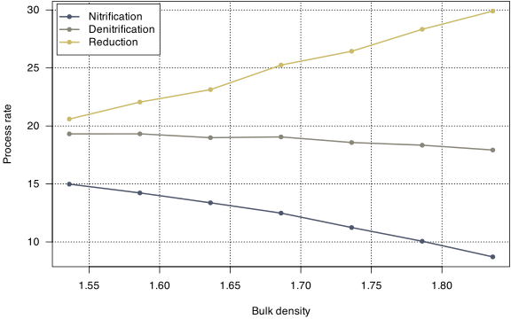

n <- 200
parameters <- data.frame(eta_SP_diffusion = rnorm(n, 1.55, 0.28),
eta_18O_diffusion = rnorm(n, -7.79, 0.27),
SP_nitrification = runif(n, 26.2, 34.6),
d18O_nitrification = rnorm(n, 36.5, 2),
SP_denitrification = runif(n, -2.4, -0.9),
d18O_denitrification = rnorm(n,11.1, 2),
eta_SP_reduction = runif(n,-8,-2),
eta_18O_reduction = runif(n,-24,-6))6 Sensitivity Analysis
Sensitivity analysis is a method used to determine how different values of an independent variable impact a particular dependent variable under a given set of assumptions.
By systematically varying key parameters, sensitivity analysis helps in identifying which variables have the most significant impact on the outcome, aiding in decision-making and risk assessment.
A sensitivity analysis is conducted in five steps:
- Define parameter distribution.
- Sample from parameter space.
- Calculate model output of interest.
- Approximate the model output based on inputs with an emulator.
- Use the emulator to calculate parameter contributions to the output variance.
The first step is usually the hardest one, as it requires an extensive review of prior knowledge of the parameters.
6.1 Parameter priors
| End Member | Value [‰] | Value reference | Sampling | Range reference | |
|---|---|---|---|---|---|
eta_SP_diffusion |
\(\eta\: \text{SP}_\text{diff.}\) | 1.55 | Well and Flessa (2008) | \(\sim \mathcal{N}(1.55, 0.28^2)\) | Well and Flessa (2008) |
eta_18O_diffusion |
\(\eta\ce{^{18}O}_\text{diff.}\) | -7.79 | Well and Flessa (2008) | \(\sim \mathcal{N}(-7.79, 0.27^2)\) | Well and Flessa (2008) |
SP_nitrification |
\(\text{SP}_\text{nit.}\) | 34.4 | Decock and Six (2013) | \(\sim \mathcal{U}(26.2, 34.6)\) | Denk et al. (2017) |
d18O_nitrification |
\(\delta\ce{^{18}O_\text{nit.}}\) | 36.5 | Lewicka-Szczebak et al. (2017) | \(\sim \mathcal{N}(36.5, 2^2)\) | |
SP_denitrification |
\(\text{SP}_\text{den.}\) | -2.4 | Decock and Six (2013) | \(\sim \mathcal{U}(-2.4, -0.9)\) | Denk et al. (2017) |
d18O_denitrification |
\(\delta\ce{^{18}O_\text{den.}}\) | 11.1 | Lewicka-Szczebak et al. (2017) | \(\sim \mathcal{N}(11.1, 2^2)\) | |
eta_SP_reduction |
\(\eta\:\text{SP}_\text{red.}\) | -5.3 | Denk et al. (2017) | \(\sim \mathcal{U}(-8, -2)\) | Denk et al. (2017) |
eta_18O_reduction |
\(\eta\ce{^{18}O_\text{red.}}\) | -16.1 | Lewicka-Szczebak et al. (2017) | \(\sim \mathcal{U}(-24, -6)\) |
To conduct the sensitivity analysis, a data frame with parameters sampled according to the distributions in Table 6.1 is created. We’ll have to specify how many times we want to do this — in this example that’s n = 200.
Next, we write a function f that will run the process rate estimator for a specified column and depth with the parameters in the vector p — which coincides to one row in the parameters data frame.
f <- function(p, data, column = 1, depth = 7.5) {
x <- longPRE(data = data,
column = column,
depth = depth,
n = 3,
parameters = do.call(getParameters, as.list(p)))
return(x[["processes"]])
}That function makes it very straightforward to compute the data for the sensitivity analysis. We’ll simply apply f to every single row in parameters using the apply function (Wickham 2011).
results <- t(apply(parameters, 1, f, data = data, column = 1, depth = 7.5))To conduct the sensitivity analysis, we now model the results based on the sampled parameters – so we treat the sampled parameters as independent variables \(\mathbf X\), and the computed process rates as dependent variables \(\mathbf Y\).
A commonly applied method of sensitivity analysis is Sobol’s method, which decomposes the total variance and assigns it to individual parameters specific interactions (Sobol’ 1990). However, Sobol’s method require’s a large number of resampling, and is thus unfit for this application. Instead, a linear regression model is used as an emulator. Often, this works fine enough because even though the reponse might not be linear overall, it can be approximated by a linear model well enough on a specific parameter interval.
First, we might look at the pairwise correlations between columns of \(\mathbf X\) and \(\mathbf Y\), i.e. all combinations of process rates as well as isotope end members (Figure 6.1).

Figure 6.1 already reveals quite a lot, but it would be better to construct a multiple linear regression model where we include all isotope end members at the same time.
The table below shows the resulting coefficients of such a multiple linear regression model. We can directly interpret the regression coefficients without any further modifications, as all considered variables share the same unit (‰).
Important
Insert a table with the regression coefficients (\(\boldsymbol \beta\)) and the standardized regression coefficients (\(\boldsymbol \beta^\ast\)).
Note that the coefficients of column, depth and their interactions are excluded from this table, even though they are more explanatory than the isotope end members.
6.2 Using a mixed effects model as an emulator
A mixed effects model is a statistical model containing both fixed effects and random effects. In matrix notation, a linear mixed effects model can be represented as follows. \[ \mathbf y = \mathbf X \boldsymbol \beta + \mathbf Z \boldsymbol \zeta + \boldsymbol \varepsilon \tag{6.1}\] In this notation, \(\mathbf y\) is a known vector of obervations, where \(\mathbb E (\mathbf y) = \mathbf X \boldsymbol \beta\). Unlike in the OLS model, the errors of this mixed effects model are derived from two sources: on one hand from the error vector \(\boldsymbol \varepsilon\), but on the other hand also from the random effects \(\mathbf Z \boldsymbol \zeta\), where we have both \(\mathbb E (\boldsymbol \varepsilon) = \mathbf 0\) and \(\mathbb E (\boldsymbol \zeta) = \mathbf 0\). So, generally, the expected error in the model is still zero. However, by use of the term \(\mathbf Z \boldsymbol \zeta\), errors might be clustered into groups, where \(\mathbf Z\) is a design matrix containing information about these groups.
| Nitrification | Denitrification | Reduction | ||||
|---|---|---|---|---|---|---|
| Predictors | Estimates | p | Estimates | p | Estimates | p |
| eta SP diffusion | 0.99 *** | <0.001 | -0.19 | 0.051 | -0.03 | 0.848 |
| eta 18O diffusion | -0.28 ** | 0.001 | -0.68 *** | <0.001 | 0.11 | 0.507 |
| SP nitrification | -0.41 ** | 0.002 | 0.20 *** | 0.001 | 0.26 *** | <0.001 |
| d18O nitrification | 0.20 ** | 0.007 | 0.13 *** | <0.001 | -0.21 * | 0.016 |
| SP denitrification | -0.67 *** | <0.001 | 0.13 *** | <0.001 | 0.04 | 0.532 |
| d18O denitrification | 0.22 *** | <0.001 | 0.41 *** | <0.001 | -0.21 *** | <0.001 |
| eta SP reduction | 0.97 *** | <0.001 | -0.22 *** | <0.001 | -0.10 | 0.067 |
| eta 18O reduction | -0.34 *** | <0.001 | -0.51 *** | <0.001 | 0.33 *** | <0.001 |
| N | 12 column | 12 column | 12 column | |||
| 5 depth | 5 depth | 5 depth | ||||
| Observations | 18000 | 18000 | 18000 | |||
|
||||||
One interpretation of the fixed effects coefficients \(\boldsymbol \beta\) is that they are the estimated population means of the coefficient distributions of the random effects coefficients (Bates et al. 2014).
For approximating the synthetic data within the scope of the sensitivity analysis, we estimate three mixed effects models – one for Nitrification, Denitrification and Reduction, respectively – with random intercepts and random slopes. Thus, \(3 \cdot 12 \cdot 5 \cdot 2 \cdot 8 + 3 \cdot 2 \cdot 8 = 2928\) parameters are estimated in total.
6.3 How do the process rates correlate?

Two things are striking when looking at the clusters in figure 6.2: Both the within-group variance as well as the total variance (i.e. the variance of the cluster location) seems to be lower for the deeper depths. Additionally, one of the cluster centers constitutes a massive outlier – it’s column 12 at 7.5 cm depth (Figure 6.2 B).
6.4 What effect does the bulk density have?
First, we’ll determine a range of bulk density to be searched.
BD <- getParameters()$BD + seq(-0.15, 0.15, 0.05)Next, we have to construct a function to return the process estimates for a give bulk density x.
f <- function(x) {
parameters <- getParameters(BD = x)
data <- subset(measurements, column==1) |>
getN2ON(parameters = parameters) |>
getMissing() |>
calculateFluxes(parameters = parameters)
return(longPRE(data, 1, 7.5, n = 15)$processes)
}Finally, we’ll apply said function to all bulk densities in the vector BD.
result <- t(sapply(BD, f))This process will return us the data to be analyzed.

| Dependent variable: | |||
| Nitrification | Denitrification | Reduction | |
| (1) | (2) | (3) | |
| BD | -20.907*** | -4.672*** | 31.267*** |
| (0.993) | (0.619) | (0.926) | |
| Constant | 47.404*** | 26.665*** | -27.614*** |
| (1.678) | (1.045) | (1.565) | |
| Observations | 7 | 7 | 7 |
| R2 | 0.989 | 0.919 | 0.996 |
| Adjusted R2 | 0.987 | 0.903 | 0.995 |
| Residual Std. Error (df = 5) | 0.263 | 0.164 | 0.245 |
| F Statistic (df = 1; 5) | 442.914*** | 57.032*** | 1,139.130*** |
| Note: | p<0.1; p<0.05; p<0.01 | ||